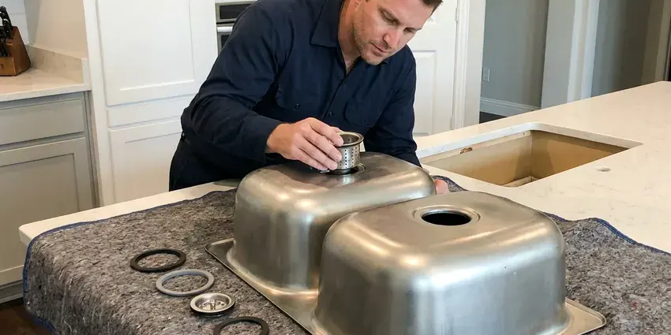

Garbage Disposal Installation in Reston, VA
FBN Plumbing installs InSinkErator, Waste King and Moen disposals in Reston, VA kitchens, sized for how you cook.
- Every Install Water Tested
- Proper Electrical Hookup
- Virginia Plumbing Code Work
- Dishwasher Connection Included

Garbage Disposal Installation in Reston, VA, Done Clean
Call FBN Plumbing for a flat installed price on a new disposal.
Garbage Disposal Installation in Reston, VA
FBN Plumbing handles both the plumbing and the electrical hookup on disposal installs in Reston. Wiring is half the job. Plenty of units come without a cord, so we add the right cord kit and clamp or hardwire it to a junction box based on your setup.
Work we handle every week:
- Coordinate new outlets, switches or air switches for disposals
- Tight, leak-free mounting for all units
- Make proper electrical and plumbing connections

Additional Kitchen Plumbing Services in Reston, VA
Our kitchen plumbing services in Reston, VA cover sinks, disposals, dishwashers, and grease traps so your kitchen keeps running without backups or leaks.


Professional kitchen sink installation, Reston


Customers
Why Choose FBN Plumbing for Garbage Disposal Installation in Reston, VA?
A poorly installed disposal leads to repairs later. We take the extra ten minutes. We spend it checking the trap height, angling the discharge tube properly and confirming the dishwasher hose runs a true high loop instead of sagging.
- Solid Brands, We install units with a track record, from InSinkErator to Waste King.
- Tidy Layout, Drains and wiring are laid out to leave room under the sink.
- Local Experience, We know the codes and drain layouts common in Reston kitchens.
Citywide Coverage
Our plumbers serve every neighborhood in town. The unit, mount, cord kit and drain parts all come with us, which keeps it to one trip without a supply house run. No second appointment needed.
Experienced Team
Every week our team installs disposals, so they know the mounting systems for InSinkErator, Waste King and Moen. Each one works differently. Knowing them by heart makes installs faster and cleaner, since there is no fumbling with instructions under a dark sink cabinet.
Safety-First Approach
We check venting and drainage each time. A disposal draining into a trap with no proper vent can siphon the trap dry and let sewer gas into the kitchen, so we confirm the vent before we call the job finished. The rule keeps smells out.
Trusted Certified Reston Plumbing Services Professionals
At FBN Plumbing, we are proud to offer certified plumbing services throughout Reston, VA. Those papers on the wall mean something. Our plumbers hold recognized industry credentials, and they follow strict safety and quality rules on every repair, installation and maintenance call we run.
Call Us Now PHCC Plumbing Contractor Recognition
PHCC Plumbing Contractor Recognition Better Business Bureau (BBB) Accreditation
Better Business Bureau (BBB) Accreditation Angi Certified Pro
Angi Certified Pro ISO 9001 Quality Management Certification
ISO 9001 Quality Management CertificationDisposal Installation in Reston, VA: The Details
Disposal Rough-In for New Construction in Reston
Rough-in decides where the outlet and drain end up before the cabinets go in. For a kitchen with a disposal, we usually set the drain stub lower than a plain sink would need, so the trap can sit below the disposal outlet with room for proper fall. A switched outlet goes in at this stage. We mark its spot so it clears the trap.

InSinkErator Model Selection in Reston, VA
Choosing between Badger and Evolution is where we start based on how you cook, how much noise bothers you and how much cabinet room you have. Badger units are compact and simple, while Evolution units are taller and heavier, with more grind stages and better sound insulation. Cabinet size often decides it. Measure first, then buy.
Commercial Disposal Installation in Reston
Commercial disposals run 1 to 5 horsepower and usually need a dedicated circuit, a control panel and a water solenoid. We set the unit on the mounting collar, run the drain to the grease trap where the local rules require it, and wire the controls so the water runs whenever the motor does. Health codes vary. We check the requirement before we order anything.
Batch-Feed Disposal Setup in Reston
The stopper lid acts as the switch on a batch-feed unit. We install the unit, then test the lid in every position to make sure the motor only runs when the lid is fully seated and stops the moment it is lifted out. That is the whole point. Families with kids and anyone nervous about a hand near the hopper tend to choose these in Reston homes.
Dishwasher Connection With Disposal Installation in Reston
New disposals come with a knockout plug in the dishwasher inlet. We knock it out with a screwdriver and hammer, fish the plug out of the chamber and connect the hose with a new clamp. A plug left in backs up the dishwasher. An air gap or high loop goes in too, which keeps sink water from running back into the dishwasher.
Disposals in Remodels and New Builds in Reston
On new builds and remodels in Reston, we coordinate with the general contractor so the disposal, the sink and the dishwasher are planned together. That usually means a dedicated circuit for the disposal, a drain stub set low enough for the trap and a dishwasher hose path that allows a proper high loop or air gap. Planning early saves rework.
High-Capacity Disposal Installation in Reston, VA
A 1 HP disposal earns its keep in a busy kitchen, like an InSinkErator Evolution or a Waste King Legend model. We check that the circuit can handle the motor and that the discharge path is sized for the heavier flow, since a big unit feeding a narrow or poorly sloped trap arm still clogs. These units weigh more. They get supported during mounting.

Disposal Installation in Rentals in Reston
Rental owners need units that hold up to tenants. Our picks for rentals are durable models with easy mounts and decent warranties, and we can do multiple units in one trip during turnover. Fast installs shorten turnover. We leave a care sheet for the tenant.
Disposal Installation Near Me in Reston, VA
Our local plumbers know the drain layouts common in Reston homes. That helps with sizing. Over the phone, we can often say whether a compact or a full-size 3/4 HP fits, based on how your kitchen is laid out.
Looking for disposal installation near you in Reston, VA? FBN Plumbing has plumbers working nearby most days, which makes a same-week install simple to schedule. Have the model number ready. If you already bought a unit, the model number tells us which mount and cord kit to bring so the install happens on the first visit.
FBN Plumbing at a Glance
- Licensed and insured plumbers serving Reston, VA
- 24/7 emergency service with same-day scheduling
- Upfront, flat-rate pricing before work begins
- 4.9-star rated by 798+ Virginia customers
Reston Map
Reston Information
- Population
- 63,226
- Area codes
- 703/571/202
- Service area
- Reston and towns within a 40 mile drive
- Nearby
- McLean, Centreville, Arlington, Leesburg
Humid summers and moderate winters are typical for most of Virginia, though mountain areas see colder temperatures and longer heating seasons. A working disposal keeps food scraps out of the kitchen trash in Reston, VA homes.
Talk to a Plumber
Call FBN Plumbing for honest, reliable plumbing from people who know the trade in Reston, VA.
Our Specialized Plumbing Services in Reston, VA
At FBN Plumbing, you get every kind of plumbing service from one company across Reston, VA. From leak detection to full system installs, our team works fast and charges fair prices on homes and commercial properties alike. Take a look at our core services below:


From Box to Running in Reston, VA
Installing a disposal is easy when it is done step by step.
Call Us
Call (434) 230-6997 to talk through your kitchen. We help you choose a model and book the install.
Prepare the Sink
We check the sink flange, drain and power. Outlet or switch work gets scheduled before the install.
Install and Test
We mount the disposal, connect the drain and wiring, and run it with water. Then we check for leaks and show you how it works.
Frequently Asked Questions About Garbage Disposal Installation in Reston
Most installs run $200 to $500 in labor. New wiring, plumbing changes and the type of disposal all move the price, and a batch-feed or air switch setup can add a little to a standard install. That excludes the unit.
If power is already under the sink, usually not. If not, we coordinate with a licensed electrician.
InSinkErator, Waste King, Moen, KitchenAid and Frigidaire, plus most other brands. Each brand mounts its own way. Switching brands usually means a new sink flange and mount, which is fine during an install but worth knowing if you are comparing prices on a simple swap.
Most disposals carry manufacturer warranties of two to ten years, and we stand behind our installation labor.
Keep bones, pits and stringy vegetables out. Use cold water every time. Use it every few days even when there is little to grind, since that keeps the impellers free and prevents rust in units that sit idle.
Look for frequent clogs, unusual grinding, leaks from the body, a smell that will not go away or a unit that will not start. Repeat jams count. When a long-serving unit starts jamming weekly, the grind ring and impellers are usually worn, and replacing it beats paying for repeat visits.
A 1/3 or 1/2 HP disposal suits light use. For families and frequent cooking, go 3/4 to 1 HP.
A 1/3 or 1/2 HP unit suits one or two people with light cooking. Most families are well served by 3/4 HP, while large households or heavy cooks get the most from a 1 HP unit that handles more scraps without jamming. Cabinet space matters too.
What People Are Saying About Our Plumbing Experts?

Nathan E.
Our tankless heater kept throwing an error code and shutting off mid shower. The tech flushed the heat exchanger, which was full of scale, and replaced a bad flow sensor. Hot water has been steady for half a year now.
Water Heater Repair · Centreville, VA
Greg S.
I manage a small strip center with six tenants. FBN Plumbing handles our annual backflow testing and fixed a recurring clog in the shared sewer line that had been backing into the nail salon. Their reports come in clean and on time.
Commercial Plumbing · McLean, VAMark T.
The floor drain in our office break room backed up every few weeks. The plumber ran a cable, then put a camera down and found roots at a joint about thirty feet out. Seeing it on the screen made the decision easy.
Drain Cleaning · McLean, VA
Angela D.
Our sump pump quit during a storm and the water was an inch from the basement carpet. FBN Plumbing put in a new pump with a battery backup that same evening. We have had two heavy rains since. It kicked on both times.
Sump Pump · Centreville, VABrian W.
I smelled gas behind the dryer and called right away. The plumber found a corroded flex connector, replaced it, and pressure tested the whole line before turning the gas back on. He let me watch the gauge hold steady for fifteen minutes.
Gas Line Repair · McLean, VA
Emily R.
The shutoff valve under our kitchen sink snapped off in my hand on a Sunday morning. FBN Plumbing had someone out by early afternoon. He replaced both angle stops with quarter turn valves and showed me where our main shutoff was, which I honestly did not know.
Plumbing Repair · Leesburg, VA